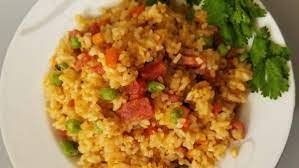

Odin Recipes
comrang
comrang

giới thiệu
cơm rang có 2 loại chính, đó là cơm rang thập cẩm và cơm rang dưa bò. Đây là
cơm rang thập cẩm.
thành phần
cơm
thịt xay
cà rốt
...
Cách làm
1. Cắm cơm
Rửa và gọt các nguyên liệu
nấu cơm
trộn các nguyên liệu và rang